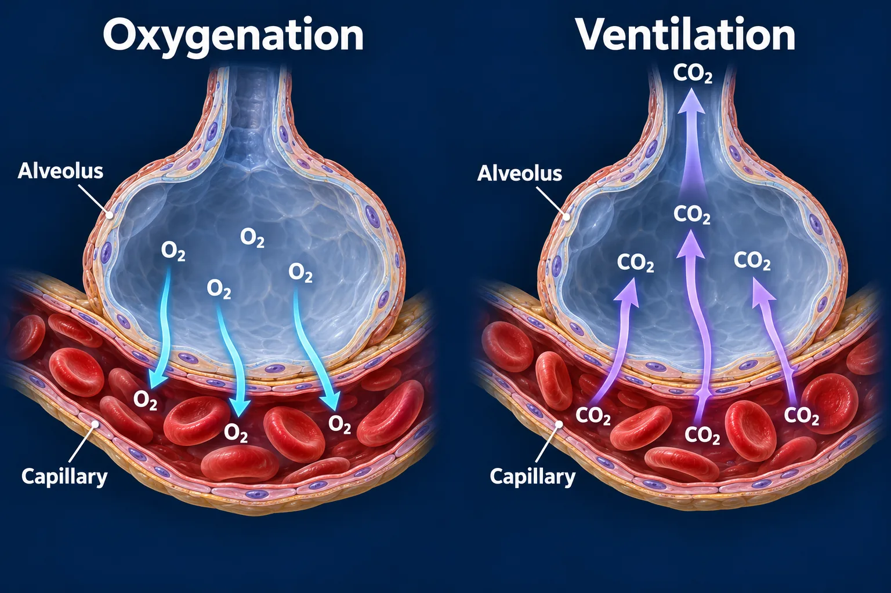

NUR 235 · Module 6 · Exam 2
Oxygen in. Carbon dioxide out.
Respiratory failure can involve oxygenation, ventilation, or both. Assess the child as well as the monitor.

Too little oxygen in blood
Hypoxemic respiratory failure means inadequate blood oxygen. Carbon dioxide may be normal or low.
Impaired oxygen transfer can have several causes. A single alveolus illustration does not show every mechanism.
NHLBI: Diagnosing respiratory failure · NHLBI: Respiratory failure symptoms
Carbon dioxide builds up
Hypercapnic respiratory failure means inadequate carbon dioxide removal. Acute CO₂ retention often lowers pH; chronic compensation changes the blood-gas pattern.
Low oxygen can occur at the same time. The two patterns can overlap.
SpO₂ does not measure CO₂
Pulse oximetry estimates oxygen saturation. Arterial blood gases provide information about oxygen, carbon dioxide and acid–base status.
A reassuring saturation can coexist with poor ventilation, especially during supplemental oxygen. Interpret trends and clinical findings together.
FDA: Pulse oximeters · AAP/AAPD: Pediatric sedation monitoring
Effort, air entry, alertness
Look for retractions, nasal flaring, grunting, abnormal rate and reduced air entry. A tired child may show less effort while getting worse.
Drowsiness, apnea, poor respiratory effort or bradycardia demand urgent escalation. There is no fixed order in which warning signs always appear.
Royal Children’s Hospital: Respiratory severity assessment · NHLBI: Respiratory failure symptoms
What your course teaches
| Type I · hypoxemic | Type II · hypercapnic | |
|---|---|---|
| The problem | Getting O₂ in | Getting CO₂ out (not moving enough air) |
| ABG | PaO₂ below 60 mmHg | PaCO₂ above 50 mmHg with pH below 7.35 |
| Typical causes | Pneumonia, ARDS, pulmonary edema, pulmonary embolism, atelectasis | Opioid overdose, neuromuscular weakness, airway obstruction, exhaustion |
Earliest sign of low oxygen: restlessness, anxiety and confusion. Act on them; don’t wait for the saturation to fall.
Side note (Codex): the two types can overlap, and the ABG numbers are a definition, not a reason to wait. A child who is tiring or drowsy needs help now.
Try it before you reveal it
SpO₂ looks reassuring on oxygen, but breathing is shallow and the child is drowsy. Reassured?
No. Oxygen saturation does not establish adequate ventilation. Reassess urgently, escalate and support airway/breathing as indicated; evaluate ventilation and CO₂ with the clinical team.
Retractions become less visible as a child grows exhausted. Is this necessarily improvement?
No. Less visible effort may reflect fatigue and inadequate breathing. Assess air entry, rate, mental status and the whole clinical picture immediately.
Can oxygenation failure and ventilation failure happen together?
Yes. Low blood oxygen and CO₂ retention can coexist. The treatment plan responds to the underlying problem and current clinical status.